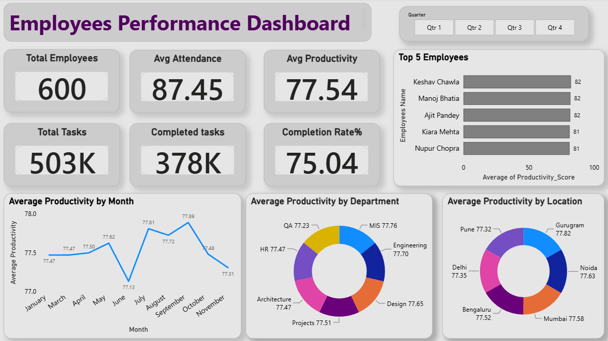

Data Analysis & Scripting
Python, Pandas, NumPy, SQL Queries, Google Apps Script, Data Cleaning & Validation.
Hi, I am Jitender Nandal|
DATA & REPORTING ANALYST
Data Analyst with 3.5+ years of experience in data analysis, MIS reporting, workflow automation, and dashboard development.
Python · Pandas · NumPy · Power BI · DAX · Advanced Excel · SQL · Automation
01 — ABOUT
I use Python, SQL, Power BI and Advanced Excel to analyse large datasets and deliver actionable business insights.
My experience spans MIS reporting, dashboard development, data cleaning and validation, API integration and workflow automation. I focus on reducing repetitive manual work and making business data easier to understand and act on.
02 — CORE COMPETENCIES
Python, Pandas, NumPy, SQL Queries, Google Apps Script, Data Cleaning & Validation.
Power BI, DAX, Advanced Excel, PivotTables, Power Query, MIS Reporting and Dashboard Development.
API Integration, Workflow Automation, Reporting Automation, Data Transformation and Process Improvement.
Executive dashboards, KPI tracking, trend analysis, regional and departmental drilldowns.
Multi-table extraction, cleaning, aggregation, validation and performance analysis.
GitHub, GitHub Actions, Python automation, APIs and desktop automation workflows.
03 — PROFESSIONAL EXPERIENCE
04 — PROJECTS

Interactive Power BI solution evaluating workforce productivity, attendance trends and operational efficiency across regional corporate hubs.
Python desktop automation system using speech recognition and text-to-speech to execute OS tasks and web interactions through voice commands.
05 — EDUCATION
KEY ACHIEVEMENTS
06 — CONTACT
Open to opportunities in data analysis, MIS reporting, business intelligence, dashboards and automation.